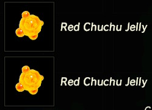
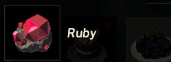

Rock-Hard Food
This is in my opinion one of the most underrated dishes of Breath of the Wild.
Many people know about the dubious food, but not everyone is aware that it has a sibling.
And that's the rock-hard dish. a Simple, but also very filling and reliable dish for when you're between a rock and a hard place.
While eating rocks might not be a good idea for people, Link can eat them without trouble.
If you're curious, you can take a look at Link's description page. But anyway, let's get to the point.
Ingredients
- A cruelty free harvested bokoblin horn.

- Two warm red Chuchu Jelly. They can be found on the Goron's area.

- The finest Ruby harvested from the Goron's mountain.

Ingredients Instructions
- Take your cruelty free harvested bokoblin horn and throw it in the cooking pot.
- Carefully add the two previously warmed Chuchu jellies and add them one by one to the pot. Careful while handling Chuchu jelly, since they're know to be extremely volatile.
- Lastly, but most importantly, get your fresh harvested ruby and give it a polish before throwing into the pot.
- Wait until you start seeing fumes and steam coming out of the cooking pot and remove from heat. It's important to not overcook it, but you want that crispiness for your dish.
- Serve and enjoy your rock-hard dish. Though be prepared. It's not easy to digest, or chew...

Home Page